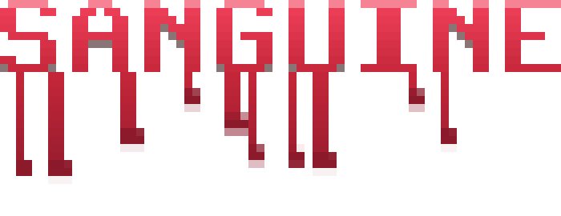
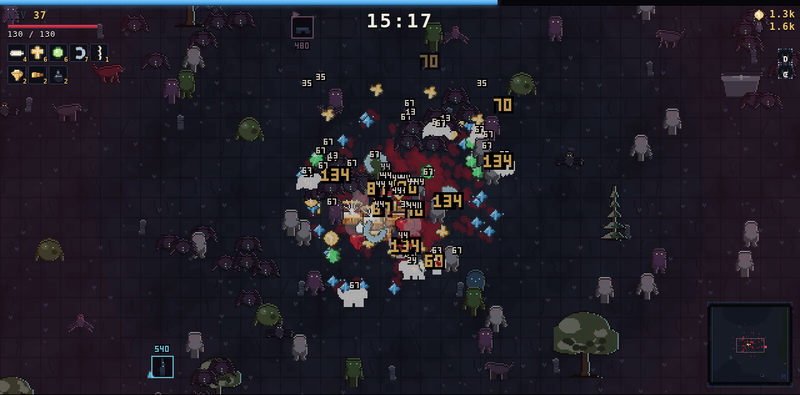
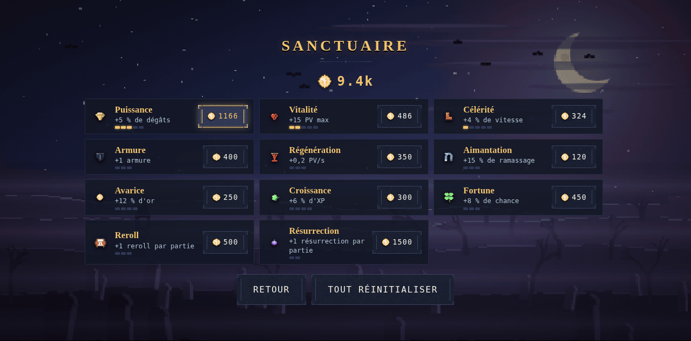
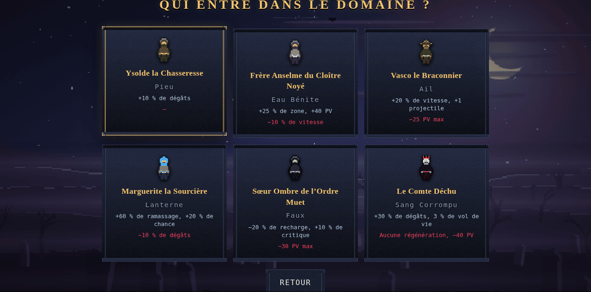
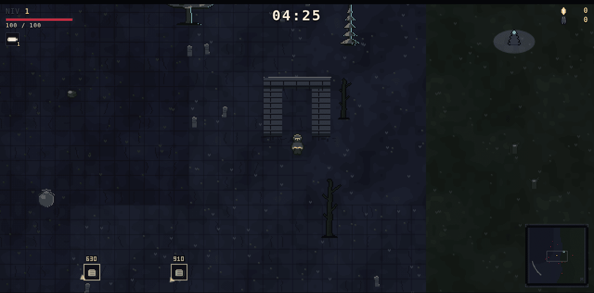
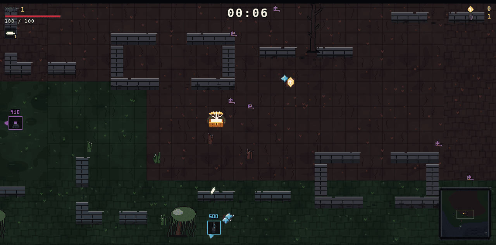
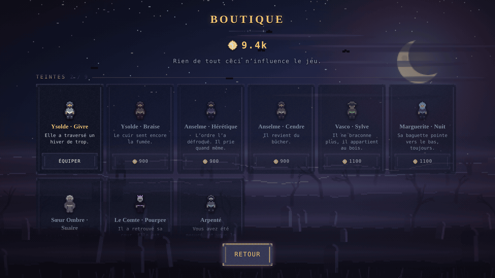
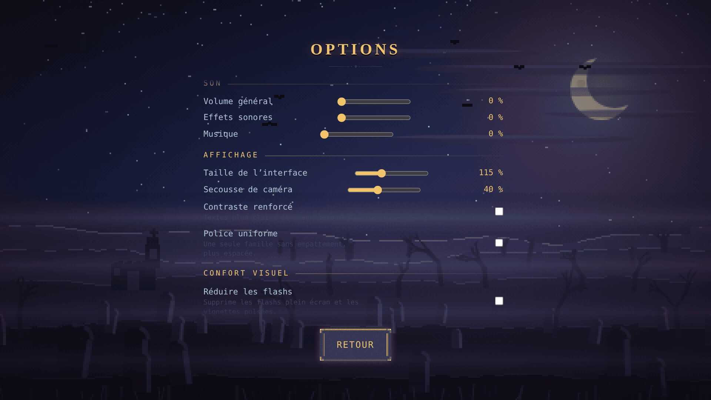
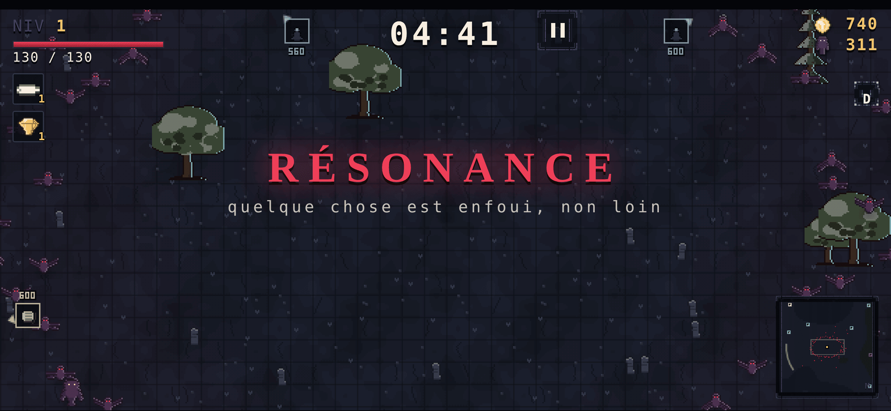
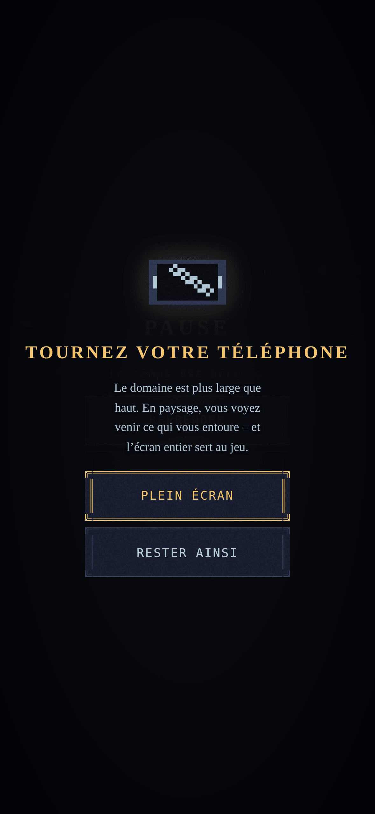

« Tenez jusqu’à l’aube. Elle ne viendra pas. »
Un survivor-like jouable dans le navigateur. Vos armes tirent seules ; votre seule décision, c’est quoi devenir. Survivez trente minutes.

Trois minutes pour comprendre, trente pour survivre.
| Action | Clavier | Manette | Tactile |
|---|---|---|---|
| Déplacement | ZQSD WASD flèches | Stick gauche | Glisser |
| Pause | Échap P | Start | – |
| Valider | Entrée Espace | A | Tap |
| Minimap | M | – | – |
| Plein écran | F | – | – |
AZERTY et QWERTY fonctionnent en même temps : les touches sont lues par code physique.
| Minute | Phase | Ce qui vous attend |
|---|---|---|
| 0 – 3 | Découverte | Peu d’ennemis. Vous testez votre arme de départ. |
| 3 – 8 | Densification | Les premiers groupes serrés. Il faut commencer à kiter. |
| 8 – 12 | Premier mur | La Matrone. Un build mal orienté cale ici. |
| 12 – 18 | Explosion | Les évolutions arrivent. Vous devenez très fort d’un coup. |
| 18 – 24 | Rattrapage | La densité vous rattrape. Élites fréquents. |
| 24 – 29 | Survie pure | L’écran est plein. Seuls les builds aboutis tiennent. |
| 30 | Le Sanguinaire | Le tuer, c’est gagner. Sinon, la Faucheuse vient. |
Dix-huit armes, quinze évolutions. Une arme montée au niveau maximum, associée au bon passif au niveau 3, devient éligible à son évolution – qui ne sort que d’un coffre. C’est ce qui rend les coffres réellement excitants.
Vingt-quatre objets uniques qui n’occupent aucun emplacement et n’apparaissent jamais dans le menu de niveau. On ne les trouve qu’au sol, lâchées par les élites et les boss, ou dans les coffres. C’est la couche de butin qui différencie deux parties menées avec le même build.
Neuf sur vingt-quatre. Le reste se découvre en jouant, et se consulte dans le codex du jeu.
Le domaine est infini et déterministe à partir de sa position : aucune carte n’est stockée, et un lieu donné est toujours le même. Un autel situé quelque part y sera encore si vous y revenez.
| Biome | Créatures favorisées | Effet sur vous |
|---|---|---|
| La Lande | Répartition neutre | – |
| Le Cimetière | Squelettes, spectres, goules | – |
| Le Marais | Zombies, sangsues, nécrophages | −14 % de vitesse |
| Les Cendres | Damnés, golems | +8 % de dégâts |
| Les Bois Morts | Loups, araignées, corbeaux | −4 % de vitesse |
Chacune ne se déclenche qu’une fois, au contact. Les atteindre oblige à quitter la zone dégagée que vous vous êtes ménagée, et à traverser la horde deux fois – à l’aller et au retour.
Treize créatures, neuf comportements distincts, cinq boss. Une règle d’équilibrage domine tout le reste : la vitesse des ennemis n’augmente jamais avec le temps. Seuls leurs points de vie et leurs dégâts montent. C’est ce qui garde le kiting possible à la vingt-huitième minute.
L’or est conservé même en cas de mort et achète onze améliorations permanentes. Le Sanctuaire est volontairement modeste : entièrement acheté, il apporte environ +35 % de puissance globale. Il doit adoucir la courbe d’apprentissage, jamais remplacer l’habileté.


Le temps n’est pas le seul adversaire. Deux mécanismes décident de la pression, et tous deux ont été réglés à la mesure plutôt qu’à l’intuition.
Les points de vie des créatures ne suivent pas que l’horloge : ils suivent aussi votre niveau. Votre puissance monte par paliers – niveaux d’arme, passifs, reliques, évolutions – et bien plus vite qu’une courbe de temps. Sans ce second facteur, un build solide de douze minutes permettait de poser la manette et rester immobile sans perdre un point de vie.
| immobile, avant | immobile, après | en fuite | |
| 12ᵉ minute | 74 s | 18 s | survit |
| 16ᵉ minute | 12 s | 9 s | 30 s |
| 20ᵉ minute | 7 s | 5 s | 13 s |
Les quatre boss scriptés tombent toujours aux mêmes minutes : au troisième run, on sait ce qui arrive et quand. Trois rôdeurs s’y ajoutent au hasard – une Matrone dès la 7ᵉ minute, un Chevalier Exsangue dès la 12ᵉ, un Chœur de Cendres dès la 17ᵉ. Cinq au maximum par partie.
Le terrain n’est pas un fond. Il porte de la végétation, des ruines qui arrêtent, des routes qui servent de repère, et des bourgs qu’on choisit d’aborder ou de contourner.
Quatre essences – pin mort, chêne noueux, saule noyé, tronc calciné – en seize silhouettes. Elles se distinguent par le contour avant la couleur : un arbre vu de haut et à distance se reconnaît à sa forme, et vous devez pouvoir les trier en niveaux de gris.
Elles ne sont pas semées régulièrement. Un second tirage décide qu’une zone est un bosquet et y triple la densité, ce qui crée des futaies et des clairières là où un semis uniforme ne donnerait qu’une moyenne partout.
Six bâtiments de 84 à 216 pixels – pan de mur, angle de maison, nef effondrée, tour tronquée, ferme brûlée, pontons rompus. Ils vous arrêtent, ainsi que les ennemis terrestres. Les volants passent au-dessus.
Les routes suivent une ligne de niveau du terrain, donc serpentent. Dans un monde infini et sans carte, savoir qu’on en suit une donne un sens à la marche. Six motifs de sol – dallage, pavé, labour, vase, cendre craquelée, terre retournée – changent la lecture d’une zone entière.
Un village abandonné aligne quatre à neuf maisons le long d’une rue dallée. La pression y monte de 40 %, et un coffre vous y attend. Il doit être désirable et dangereux : sans récompense certaine, le bon calcul serait de passer au large.


Brasero, jarre, reliquaire brisé, sarcophage. Les trois premiers donnent leur contenu sans rien demander. Le sarcophage libère ce qu’il gardait avant de livrer son coffre – c’est le seul qui coûte quelque chose, et donc le seul dont l’ouverture soit un choix.
Un survivor-like se joue par sessions courtes et répétées. Tout ce qui suit existe pour que reprendre une partie ne coûte rien – et pour que l’or serve à autre chose qu’à la puissance brute.
L’or n’avait qu’un débouché : le Sanctuaire, c’est-à-dire de la puissance. Un joueur qui a fini d’acheter ses améliorations n’avait plus rien à en faire. La boutique met les deux en concurrence – dépenser en puissance ou en allure – avec vingt-trois cosmétiques : neuf teintes de personnage, six traînées de pas, quatre thèmes d’interface et quatre curseurs.


Un écran montre les quinze recettes d’évolution et les quatre conditions de déblocage, avec l’avancement chiffré : « 520 sur 600 » dit si l’objectif est proche, là où « survivre dix minutes » ne dit rien.
Quarante-deux pièces sont enfouies dans le domaine. Elles ne tombent pas comme du butin et ne s’achètent pas : elles se cherchent. La minimap pulse en direction de ce qui dort à proximité, de plus en plus vite à mesure qu’on approche – une mécanique de sourcier, pas une carte au trésor. Marguerite la Sourcière, seule personne du casting dont le métier est de trouver ce qui est enfoui, porte plus loin que les autres.
Chaque pièce trouvée rejoint l’Archive, où elle se lit en plein écran. L’Archive n’affiche qu’un indice à la fois : on a toujours exactement un objectif, jamais une liste.
Un onglet fermé au milieu d’une partie ne la coûte plus : la progression est enregistrée en continu et l’écran-titre propose de reprendre là où l’on s’était arrêté. Le genre n’en fait pas l’usage – une partie dure trente minutes et se rejoue – mais trente minutes, c’est long à perdre sur une fausse manœuvre.
Neuf réglages, tous persistants : échelle de l’interface, intensité des secousses de caméra (à 40 % par défaut), réduction des flashs, réduction des animations, contraste renforcé, police sans empattement, repère sous le joueur, affichage des dégâts chiffrés, et vitesse de jeu réglable – de quoi ralentir la simulation entière sans rien changer à l’équilibrage.
Le jeu se joue au doigt : un joystick virtuel apparaît là où l’on pose le pouce, et un bouton de pause est posé en haut, hors de portée des pouces au repos. L’écran reste allumé pendant une partie – les armes tirent seules, on peut ne pas toucher l’écran pendant de longues secondes.
Le cadrage vise le paysage. La vue est en 16∶9, et le facteur d’échelle entier – celui qui garantit un pixel net – ne peut pas remplir un écran portrait : il y laisse deux bandes noires. Le jeu propose alors de tourner l’appareil.
La proposition ne se déclenche pas sur le type d’appareil mais sur la part d’écran réellement perdue. Un iPhone en portrait en perd 61 %, un iPad 32 % ; tous deux reçoivent la proposition. Une tablette 4∶3 n’en perd que 17 % et n’est pas sollicitée. Et la proposition reste une proposition : qui veut jouer en portrait le peut.


Tout ce que vous voyez et entendez est généré par le code au démarrage. Aucun PNG, aucun fichier audio, aucune police. Le jeu entier pèse 79 ko compressés et fonctionne hors ligne.
Int32Array : plus rapide qu’une mise à jour incrémentale, et impossible à désynchroniser.Les courbes sont réglées par un bot qui joue réellement : il fuit la pression locale des ennemis, dérive vers les gemmes et choisit ses cartes. Deux réglages de densité ont été mesurés puis rejetés. Le second est le plus instructif.
| Réglage | Résultat mesuré |
|---|---|
| 0,9 + min × 0,55 | ~20 ennemis à l’écran, niveau 8 à 3 min 30 : trop vide |
| 1,6 + min × 1,05 | 474 ennemis à 6 min, une seule arme au niveau 5, mort à 6 min 48 |
| 1,1 + min × 0,70 | Niveau 14 à 4 min 30, 4 armes, 745 morts, 60 fps – retenu |
La documentation de conception complète – vision, game design, bible de contenu, direction artistique, design audio – est dans le dépôt.